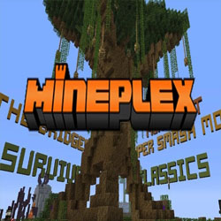
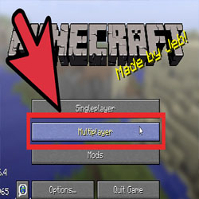
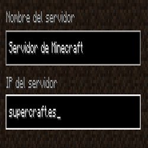
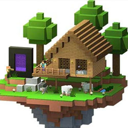

Sumérgete en las aguas cristalinas de Cancún y descubre un mundo submarino lleno de color y vida.
Minecraft es un juego de mundo abierto, y no tiene un fin claramente definido (aunque sí que tiene una dimensión llamada a sí misma 'The End', o en español 'El Final' en donde después de entrar y matar a la dragona aparecen los créditos del juego y un poema).31 Esto permite una gran libertad en cuanto a la elección de su forma de jugar. A pesar de ello, el juego posee un sistema que otorga logros por completar ciertas acciones.3233 La cámara es en primera persona, aunque los jugadores tienen la posibilidad de cambiarla a una perspectiva de tercera persona en cualquier momento.34 El juego se centra en la colocación y destrucción de bloques, siendo que este se compone de objetos tridimensionales cúbicos, colocados sobre un patrón de rejilla fija. Estos cubos o bloques representan principalmente distintos elementos de la naturaleza, como tierra, piedra, minerales, troncos, entre otros.35 Los jugadores son libres de desplazarse por su entorno y modificarlo mediante la creación, recolección y transporte de los bloques que componen al juego, los cuales solo pueden ser colocados respetando la rejilla fija del juego.3536 Los jugadores son capaces de crear además las denominadas «granjas», que son estructuras y mecanismos para conseguir un fin, aprovechándose de ciertas mecánicas del juego. En ciertos casos, algunas de ellas se terminan implementando al juego, como el observador.37 En el juego se pueden encontrar estructuras especiales como aldeas, galerías mineras, templos marinos, pirámides y templos selváticos.
Supervivencia El modo supervivencia (survival en inglés) se basa en la vida real combinada con un poco de fantasía y se trata de la supervivencia al ataque de las múltiples criaturas que surgen en la oscuridad o de noche.47 El máximo aguante que tienen los personajes consta de 10 corazones (20 puntos de salud). En este modo las herramientas, armas y armadura se gastan con el uso. Creativo En el modo creativo (creative en inglés) se centra enteramente en el aspecto de la construcción libre. Los jugadores poseen un suministro ilimitado de todos los bloques y objetos del juego,48 que pueden colocar y destruir de forma instantánea. Además, no son atacados por los monstruos, son inmunes a todo daño (aunque sí pueden morir cayendo al vacío si están en Java Edition, o mediante el comando /kill) y pueden volar libremente por el mapa. En este modo no se pueden romper bloques sosteniendo espada, para prevenir la destrucción del entorno cuando el jugador golpea o ataca. Extremo El modo extremo (hardcore en inglés) es idéntico al modo supervivencia, con la diferencia de que tras la muerte del jugador este ya no puede volver a revivir y la dificultad está fijada en difícil.4950 Espectador El modo espectador permite a los jugadores volar a través de bloques y ver el mundo sin interactuar con él. En este modo, la barra de acceso rápido se convierte en un menú que permite al jugador teletransportarse a los jugadores en la partida. También es posible ver desde el punto de vista de otro jugador o criatura. 51 Aventura El modo aventura (adventure en inglés) está destinado a los jugadores que se dedican a crear mapas para usuarios que deseen jugar en línea o solos. Este modo de juego se basa en los siguientes criterios que afectan al jugador en distintos sentidos:47 El jugador solo puede romper un bloque si tiene la herramienta adecuada, y esta programada con comandos para que pueda ser rota. Si el creador del mapa así lo configura, la dificultad no puede ser modificada por los jugadores. Mods y modos de juego no oficiales Algunos usuarios o desarrolladores avanzados optan por crear sus propios modos de juego y aplicarlos en servidores o mapas de aventura para jugar en modo de un jugador. Sin embargo, estos modos de juego suelen verse poco y la mayoría de los servidores modifican algunas extensiones para hacer parecer que tienen un modo de juego personalizado.[cita requerida] En las primeras versiones preliminares de Minecraft, el único modo de juego disponible era similar al creativo actual. En particular, la versión clásica (que ya no recibe actualizaciones) aún puede jugarse gratuitamente desde navegadores web.20
fotos   
EL MEYOR BIDEO DU MONDO